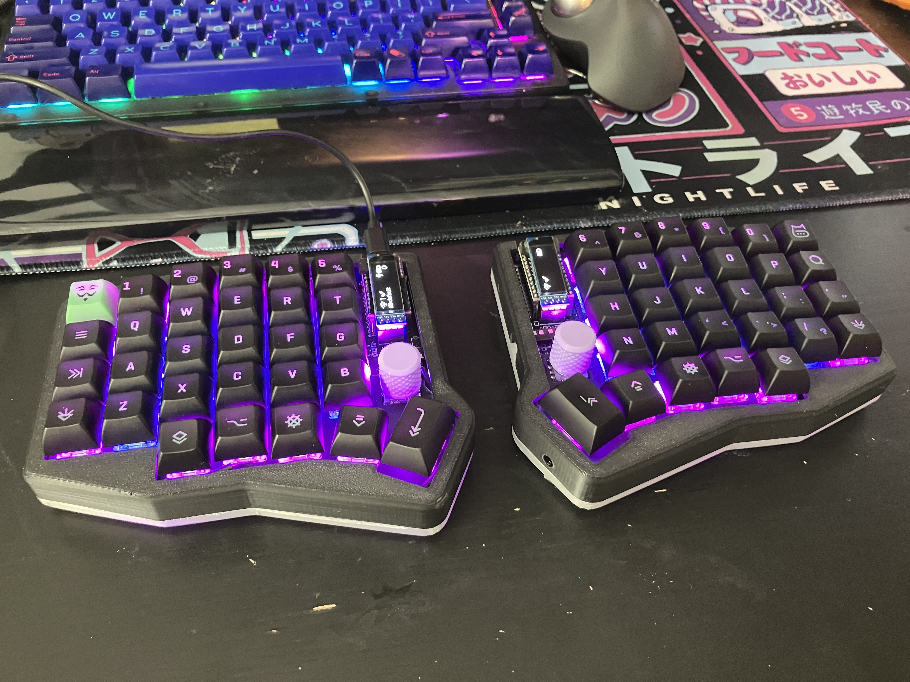

Handwired
Design: Void40
Inspired by a video sent to me by a friend, "Building a Split USB-C Handwired Keyboard" by Joe Scotto, I started initially with a 3x3 macropad in the same style as Joe Scotto.
I moved onto a Planck-like shortly afterwards, initially I was using a large RP2040 devboard, but I settled on an RP2040 Zero (not pictured!).
Keyswitches:
- Inner: Matrix Lab FFFF (Tactile)
- Outer: Nightwalker Glow-in-the-Dark Nightcall (Silent Linear)
Stabilizers were hand-lubricated.
Keycaps were KAT Cyberspace.
{kind=link}
{kind=link}
{kind=link}
Sofle RGB
Case design: "Sofle V2.1/RGB Sandwich Mount Case w/ Tenting" by onglez PCB vendor: PandaKB's modified Sofle RGB (I did not use the kit!) Keyboard design: "Sofle" by Josef Adamcik, "Sofle RGB" by Dane Evans (Sofle RGB)
Keyswitches:
- Turquoise Tealios (Linears) for alphas
- Zealio V2 (Tactile) for all other keys
Keycaps are KAT Cyberspace.
I spent an awful lot of time debugging issues that were fundamentally my own fault for following the build guide wrong in one way or another, but I feel like it turned out very pretty.
[]